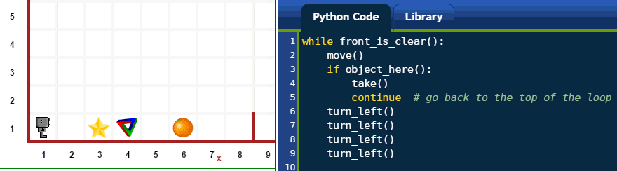

Warning
This document is in the middle of a major revision. Some sections might be missing text, or have French text as placeholder.
지금까지, 리보그 세상에 알려진 기본 명령어를 시연하는데 사용된 코드를 이해해야 했다. 이번 학습에서, 간략한 예제를 통해서 파이썬 키워드와 함수를 일부 소개한다.
and¶리보그가 미로를 탈출하는 방법을 찾을 필요가 있다고 가정한다... 실제로, 예제로 미로탈출을 시연해보자.

정확하게 어떤 일이 진행되고 있는지 너무 빨리 지나가서 이해하기 어렵다.
미로를 불러와서 이해하려고 하면, Documentation 메뉴를
먼저 클릭하고, “Big maze”를 선택한다;
그리고 나면, 코드를 작성해 나가면 된다. 아래에 코드 작성방법을 저자가 설명한다.
리보그가 move() 와 turn_left() 를 할 수 있다는 것을 알고 있다.
또한, turn_right() 명령어를 함수로 작성하는 방법도 알고 있다.
세가지 명령어만 가지고 꾸불꾸불한 미로를 탈출하는 방법을 알아내는데 충분하다.
문제는 어떤 경로를 따를지 알아내는 것이다...
리보그가 스스로 어떤 경로를 따를지 결정했으면 한다.
front_is_clear() 명령어를 사용해서,
리보그가 안전하게 앞으로 전전할지도 결정할 수 있다는 것을 알고 있다.
그리고, right_is_clear() 명령어를 사용해서,
리보그가 경로 우측에 아무것도 없는지 결정할 수 있다는 것도 알고 있다.
리보그가 처할 수 있는 경우가 세가지 유형이 있다. 먼저, 전방과 우측에 모두 벽으로 막힌 경우가 있을 수 있다.
상기와 같은 경우, 리보그가 취할 수 있는 유의미한 행동은 좌회전이 된다. 파이썬 코드로, 다음과 같이 작성할 수 있다:
if not front_is_clear() and not right_is_clear():
turn_left()
상기 코드에서, 저자는 파이썬 키워드 and 를 사용해서 조건 모두가 필요하다고 나타냈다.
조건을 함께 묶도록 괄호를 사용해서 사용한 논리를 더 쉽게 볼 수 있게 만들 수 있다:
if (not front_is_clear()) and (not right_is_clear()):
turn_left()
두번째로, 리보그가 우측은 막혀 있으나 앞쪽은 막히지 않는 상황에 있을 수 있다.

상기 상황에서, 유의미한 행동은 앞으로 전진하는 것이 된다; 좌회전 선택옵션은 그 자리에서 회전만 시키게 된다:
if (front_is_clear()) and (not right_is_clear()):
move()
세번째로, 리보그는 우측 경로가 막히 않는 상황에 있을 수 있다:

상기 경우에, 리보그는 우회전 기회를 활용하는데, 이는 상기 경우에서는 취할 수 없는 행동이 된다. 그리고(and), 해당 방향으로 한걸음 앞으로 나아간다:
if right_is_clear():
turn_right()
move()
상기 전략을 채택해서, 리보그는 오른쪽 벽면을 따라 앞으로 나아가서 미로를 탈출하게 된다. 따라서, 상기 세단계 전략을 단일 명령어로 다음과 같이 코드화 해서 작성한다:
def follow_right_wall():
if (not front_is_clear()) and (not right_is_clear()):
turn_left()
if (front_is_clear()) and (not right_is_clear()):
move()
if right_is_clear():
turn_right()
move()
turn_right() 함수와 함께, 상기 함수가 정의되면,
리보그가 미로를 탈출하는데 필요한 모든 것은 다음과 같다:
while not at_goal():
follow_right_wall()
시도해 보기!
더 읽어 내려가기 전에, 상기 프로그램을 시도해 본다. 상기 프로그램이 동작함을 확인할 수 있어야 된다.
elif 와 else¶상기 전략은 세가지 상호 배타적인 사례에 달려있다. 첫 둘 경우에, 우측 경로는 막혀있지만, 세번째 경우에는 해당되지 않는다. 첫번째와 두번째 경우를 구별하는 것이 전방 경로에 장애물이 있는지 여부다. 코드를 주의깊이 해독하게 되면 이런 점이 이해될 수 있다... 하지만, 더 나은 방법이 있다.
파이썬에는 if 문을 보완하고,
상호 배타적이라고 간주되는 경우를 나타내는 두가지 키워드 elif 와 else``가 있다;
이를 통해서, 언급된 조건이 만족되는 첫 코드 덩어리만 파이썬이 실행한다.
``else 키워드는 어떤 조건도 부탁되지 않았기 때문에,
다른 조건이 만족되지 않는다면, 해당 코드는 항상 실행된다;
그렇지 않으면 그냥 생략된다.
이런 키워드를 사용해서 follow_right_wall() 함수를 재작성한 방법이 다음에 나와있다:
def follow_right_wall():
if right_is_clear():
turn_right()
move()
elif front_is_clear():
move()
else:
turn_left()
조건 중에서 단지 하나만 실행된다는 것을 알기만 하면, 상기 코드는 읽고 이해하기 훨씬 더 쉽다.
그런데, 이런 유형의 코드 작성에 단지 하나의 if 절(clause) 만 항상 포함되고,
0부터 원하는만큼 elif 절 을 포함할 수 있고,
0 혹은 1개 else 절 이 포함된다.
or¶만약 다음 조건이 두개 있다면:
if condition_1 or condition_2:
do_something()
두 조건중에 하나만 True 가 되기만 하면, if 절이 실행된다;
and``를 사용할 때는, **두** 조건 모두 ``True 가 될 필요가 있다. 예를 들어:
break 와 continue¶break 키워드는 (for 루프 혹은 while 루프) 루프에서 빠져나와서
루프 다음에 오는 코드를 계속해서 실행한다.
continue 키워드는 루프 내부 에서 실행을 멈추고, 루프 시작점으로 되돌아 간다.
각 키워드에 대한 예제가 다음에 나와 있다.

not, and, or 키워드는 논리 키워드로 알려져 있고,
부울 키워드 True 와 False 혹은 이에 상응하는 것과 함께 사용된다.
for (in 과 함께), while, if, elif, else,
break, continue 키워드를 제어흐름 키워드라고 부른다.
왜냐하면, 코드 일부를 반복하거나 건너뛸지 결정해서, 코드 실행에 대한 “흐름 제어”를 하기 때문이다.
pass¶종종, 아직 정의하지 못한 함수 혹은 다수 if/elif/else 절을 갖춘 프로그램을 작성코져 한다.
하지만, 예상한 대로 제대로 동작하는지 테스트를 일부 하고자 한다.
이런 경우 pass 키워드가 유용할 것이다.
pass 키워드는 파이썬에게 작업을 지시한다... 아무것도 하지 말라고.
이것이 어떻게 유용할지 궁금할 것이다. 다음에 일부 가공된 예제가 있다:
def follow_right_wall():
if right_is_clear():
pass # 여기에 무엇을 수행해야 되는지 해결해야 된다.
elif front_is_clear():
move()
else:
turn_left()
위에서 pass 키워드를 사용해서 적절히 들여쓰기 하고 코드를 작성한다.
그렇게 하면 구문 오류 없이 코드가 실행된다.
pass 키워드를 사용한 잠재적인 다른 사용예제가 있지만,
일반적으로 어떻게 사용되는지에 대한 아이디어를 상기 예제가 제시하고 있다.